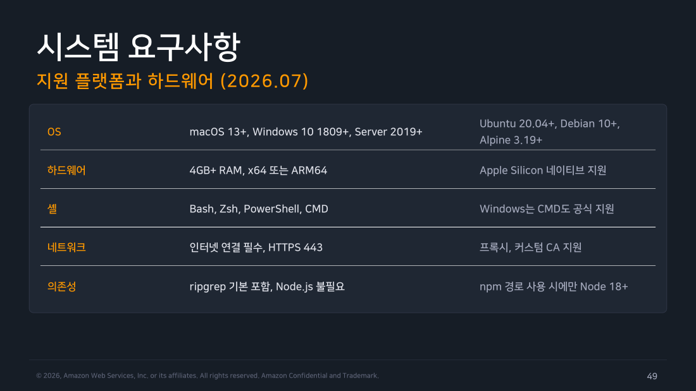
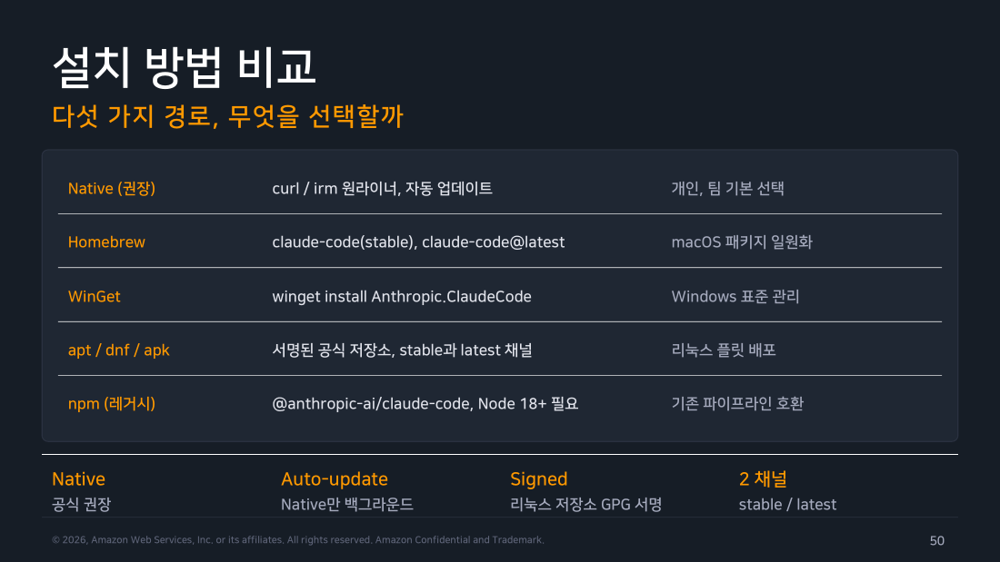
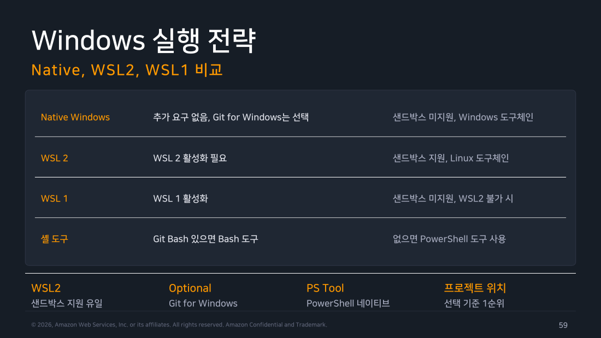

Part 3 — 설치¶
한 줄 요약¶
Native 원라이너 설치가 새 표준입니다. Node.js가 필요 없는 단일 바이너리이고, 백그라운드 자동 업데이트가 기본입니다. 채널(stable/latest)과 버전 하한으로 개인부터 조직 플릿까지 버전을 통제합니다.
왜 알아야 하나¶
예전 자료를 보면 npm install -g @anthropic-ai/claude-code가 나옵니다. 이건 이제 레거시 경로입니다.
Native 설치로 바뀌면서 Node.js 의존성이 사라졌고, 자동 업데이트와 채널 개념이 생겼습니다. 구버전 가이드를 따라하면 불필요하게 Node를 깔게 되고, 권한 문제로 헤매게 됩니다.
1. 내 환경에서 돌아가는가¶
먼저 확인할 것들인데, 결론부터 말하면 요즘 개발 머신이면 대체로 문제없습니다.
OS는 macOS 13 이상, Windows 10 1809·Server 2019 이상, 리눅스는 Ubuntu 20.04·Debian 10·Alpine 3.19 이상을 지원합니다.
하드웨어는 RAM 4GB에 x64 또는 ARM64면 됩니다. Apple Silicon은 에뮬레이션이 아니라 네이티브로 돕니다.
셸은 Bash, Zsh는 물론 PowerShell과 CMD까지 공식 지원합니다. Windows에서 WSL을 안 써도 된다는 뜻입니다.
네트워크는 인터넷 연결과 HTTPS 443이 필요합니다. 사내 프록시와 커스텀 CA를 지원하므로 폐쇄망에서도 구성할 수 있습니다.
의존성이 가장 중요한데, 여기가 예전 자료와 크게 달라진 부분입니다. Node.js가 필요 없습니다. 검색 엔진인 ripgrep도 설치 패키지에 기본 포함되어 있어 따로 깔 필요가 없습니다.
npm으로 설치할 때만 Node.js가 등장하는데, 그것도 설치 시점에만 필요합니다(v2.1.198 기준 Node 22 이상). npm 패키지는 독립 설치본과 동일한 네이티브 바이너리를 내려받을 뿐이라, 설치가 끝나면 claude는 Node를 전혀 호출하지 않습니다. 구버전 Node에서는 설치가 실패하는 대신 EBADENGINE 경고만 출력되고 실행은 정상 동작합니다.

▲ 교재 슬라이드 49 — 시스템 요구사항
2. 다섯 가지 설치 경로, 무엇을 고를까¶
설치 방법이 다섯 개나 되지만, 어떤 상황이냐로 나누면 고민할 게 별로 없습니다.
flowchart TD
Q{"어떤 상황인가?"}
Q -->|"그냥 내 노트북에 깔고 싶다"| N["<b>Native (권장)</b><br/>curl / irm 원라이너<br/><br/>✅ 백그라운드 자동 업데이트<br/>✅ Node.js 불필요"]
Q -->|"macOS 패키지를 brew로 일원화"| H["<b>Homebrew</b><br/>claude-code / @latest<br/><br/>❌ 수동 업그레이드"]
Q -->|"Windows 표준 관리 체계"| W["<b>WinGet</b><br/>Anthropic.ClaudeCode<br/><br/>❌ 수동 (옵션 제공)"]
Q -->|"사내 리눅스 플릿에 배포"| L["<b>apt / dnf / apk</b><br/>GPG 서명된 공식 저장소<br/><br/>기존 시스템 절차 편입"]
Q -->|"기존 npm 파이프라인 호환"| P["<b>npm</b><br/>@anthropic-ai/claude-code<br/><br/>✅ 자동 업데이트 됨<br/>설치에만 Node 22+ 필요"]
style Q fill:#673ab7,stroke:#4527a0,stroke-width:3px,color:#fff
style N fill:#e8f5e9,stroke:#388e3c,stroke-width:2px,color:#000
style H fill:#e3f2fd,stroke:#1976d2,color:#000
style W fill:#e3f2fd,stroke:#1976d2,color:#000
style L fill:#fff3e0,stroke:#f57c00,color:#000
style P fill:#ffebee,stroke:#d32f2f,color:#000특별한 이유가 없다면 Native가 답입니다. 원라이너 하나로 끝나고, Node.js가 필요 없는 단일 바이너리이며, 무엇보다 자동 업데이트가 됩니다.
패키지 매니저 경로(Homebrew, WinGet, apt 등)는 이미 그 체계로 소프트웨어를 관리하고 있을 때 의미가 있습니다. 사내 리눅스 플릿처럼 apt upgrade 절차가 이미 돌고 있다면 거기 편입시키는 게 맞습니다.
npm 경로도 여전히 지원되고 자동 업데이트도 됩니다. 다만 설치할 때 Node 22 이상이 필요하므로, 새로 시작한다면 Node 의존이 없는 Native가 더 간단합니다.
여기가 가장 중요한 차이입니다 — 자동 업데이트 여부
Native와 npm 설치는 백그라운드로 자동 업데이트됩니다. (npm은 전역 디렉토리에 쓸 수 있는 경우에 한하며, 못 쓰면 시작 시 1회 알림이 뜹니다.) Homebrew, WinGet, apt, dnf, apk는 자동 업데이트되지 않습니다. 각 패키지 매니저의 업그레이드 절차를 따로 밟아야 하고, 깔아놓고 잊어버리면 몇 달 전 버전을 계속 쓰게 됩니다.
Homebrew와 WinGet은 CLAUDE_CODE_PACKAGE_MANAGER_AUTO_UPDATE=1로 Claude Code가 대신 업그레이드를 실행하게 할 수 있습니다. apt·dnf·apk는 상승 권한이 필요해서 계속 수동입니다.

▲ 교재 슬라이드 50 — 설치 방법 5종 비교
설치 방법별 상세¶
Native — macOS / Linux / WSL¶
# 설치 (macOS, Linux, WSL 공통)
curl -fsSL https://claude.ai/install.sh | bash
# 프로젝트에서 첫 실행
cd your-project
claude
# 처음 실행 시 브라우저 로그인 안내가 표시됩니다
특징:
- Node.js 불필요, 단일 바이너리
- 백그라운드 자동 업데이트 기본 활성
- 403, syntax error 발생 시 공식 troubleshoot-install 문서 참조
Native — Windows¶
PowerShell과 CMD를 구분해야 합니다.
:: Windows CMD (프롬프트가 C:\)
curl -fsSL https://claude.ai/install.cmd -o install.cmd
install.cmd && del install.cmd
어느 셸인지 판별하는 팁:
- '&&' is not a valid statement 에러 → 여기는 PowerShell
- 'irm' is not recognized 에러 → 여기는 CMD
Git for Windows:
- 설치를 권장합니다 → Bash 도구가 활성화됩니다
- 없으면 PowerShell 도구로 대체됩니다
- WSL에 설치했다면 불필요
- 경로 지정: CLAUDE_CODE_GIT_BASH_PATH
Homebrew (macOS)¶
cask가 두 개입니다.
# stable 채널 (약 1주 지연, 큰 회귀 릴리스 제외)
brew install --cask claude-code
# latest 채널 (릴리스 즉시 반영)
brew install --cask claude-code@latest
# 업그레이드 (자동 업데이트 없음)
brew upgrade claude-code
brew upgrade claude-code@latest
# 디스크 정리 (이전 버전 보관 특성)
brew cleanup
WinGet (Windows)¶
Warning
실행 중에는 파일 잠금으로 업그레이드가 실패할 수 있습니다.
CLAUDE_CODE_PACKAGE_MANAGER_AUTO_UPDATE=1로 백그라운드 업그레이드를 위임하는 옵션이 제공됩니다.
Linux — apt (Debian / Ubuntu)¶
서명된 공식 저장소를 사용합니다.
sudo install -d -m 0755 /etc/apt/keyrings
sudo curl -fsSL https://downloads.claude.ai/keys/claude-code.asc \
-o /etc/apt/keyrings/claude-code.asc
echo "deb [signed-by=/etc/apt/keyrings/claude-code.asc] \
https://downloads.claude.ai/claude-code/apt/stable stable main" \
| sudo tee /etc/apt/sources.list.d/claude-code.list
sudo apt update && sudo apt install claude-code
GPG 지문 검증 (신뢰 전 필수):
gpg --show-keys /etc/apt/keyrings/claude-code.asc
# 31DD DE24 DDFA B679 F42D 7BD2 BAA9 29FF 1A7E CACE
현장 메모
사내 리눅스 플릿에 배포한다면 이 경로가 정답입니다. GPG 서명 검증이 되고, 기존 apt upgrade 운영 절차에 그대로 편입됩니다. latest 채널로 바꾸려면 URL과 suite를 교체하면 됩니다.
Linux — dnf / apk¶
# Fedora / RHEL (dnf)
sudo tee /etc/yum.repos.d/claude-code.repo <<'EOF'
[claude-code]
name=Claude Code
baseurl=https://downloads.claude.ai/claude-code/rpm/stable
enabled=1
gpgcheck=1
gpgkey=https://downloads.claude.ai/keys/claude-code.asc
EOF
sudo dnf install claude-code
# Alpine 준비물 (musl 계열)
apk add libgcc libstdc++ ripgrep
# settings.json에 추가: "USE_BUILTIN_RIPGREP": "0"
npm (레거시)¶
# 설치에 Node.js 22 이상 필요 (v2.1.198 기준)
node --version
# 글로벌 설치
npm install -g @anthropic-ai/claude-code
# 검증
claude --version
# 업그레이드 — npm update -g 는 원래 semver 범위를 따라가므로 최신으로 안 갈 수 있음
npm install -g @anthropic-ai/claude-code@latest
Warning
sudo npm install -g는 쓰지 마세요. 권한 문제와 보안 위험으로 이어집니다. 권한 오류가 나면 claude doctor가 해법을 안내합니다.
npm 경로도 자동 업데이트가 되고 실행 바이너리도 Native와 같지만, 신규 도입이라면 Node 의존을 아예 없앨 수 있는 Native 경로가 더 단순합니다.
개념 2 — 버전 지정과 채널 선택¶
# stable 채널로 설치 (설치 채널이 이후 업데이트의 기본값이 됨)
curl -fsSL https://claude.ai/install.sh | bash -s stable
# 특정 버전 설치
curl -fsSL https://claude.ai/install.sh | bash -s 2.1.89
# Windows PowerShell에서 버전 지정
& ([scriptblock]::Create((irm https://claude.ai/install.ps1))) 2.1.89
두 채널의 차이:
| 채널 | 반영 시점 | 성격 |
|---|---|---|
latest |
릴리스 즉시 | 기본값. 새 기능을 바로 |
stable |
약 1주 지연 | 큰 회귀를 일으킨 릴리스는 제외 |
설치 채널이 이후 업데이트 기준이 됩니다. 처음에
stable로 깔면 계속 stable을 따라갑니다.
개념 3 — Windows 실행 전략¶
Windows에서는 선택지가 셋인데, 갈림길은 샌드박스가 필요한지 여부입니다.
flowchart TD
Q{"샌드박스<br/>격리 실행이<br/>필요한가?"}
Q -->|"필요하다"| W2["<b>WSL 2</b><br/>WSL 2 활성화 필요<br/><br/>✅ 샌드박스 지원 (유일)<br/>Linux 도구체인 사용"]
Q -->|"불필요 — Windows 도구체인 선호"| NW["<b>Native Windows</b><br/>추가 요구사항 없음<br/><br/>❌ 샌드박스 미지원<br/>Git for Windows 는 선택"]
Q -->|"WSL 2 를 못 쓰는 환경"| W1["<b>WSL 1</b><br/>WSL 1 활성화<br/><br/>❌ 샌드박스 미지원<br/>WSL 2 불가 시 대안"]
style Q fill:#673ab7,stroke:#4527a0,stroke-width:3px,color:#fff
style W2 fill:#e8f5e9,stroke:#388e3c,stroke-width:2px,color:#000
style NW fill:#e3f2fd,stroke:#1976d2,color:#000
style W1 fill:#fff3e0,stroke:#f57c00,color:#000여기에 셸 도구가 하나 더 얽힙니다. Git for Windows(Git Bash)가 설치되어 있으면 Bash 도구를 쓰고, 없으면 PowerShell 도구로 대체됩니다. 둘 다 정상 동작하지만 권한 규칙을 쓸 때 Bash(...)냐 PowerShell(...)이냐가 달라지므로 알아둘 필요가 있습니다.
샌드박스가 필요하면 WSL 2가 Windows에서 유일한 경로입니다
다만 실무에서 선택 기준 1순위는 사실 프로젝트 파일이 어디 있느냐입니다. Windows 파일시스템과 WSL 파일시스템을 넘나들면 I/O 성능이 크게 떨어지므로, 코드가 있는 쪽에 맞춰 고르는 게 맞습니다.

▲ 교재 슬라이드 59 — Windows 실행 전략 비교
개념 4 — 컨테이너에서 쓰기¶
Docker¶
FROM ubuntu:24.04
RUN apt-get update && apt-get install -y curl git ca-certificates
RUN curl -fsSL https://claude.ai/install.sh | bash
ENV PATH="/root/.local/bin:${PATH}"
WORKDIR /workspace
# 실행 예시 (키는 런타임에 주입)
docker run -it --rm \
-e ANTHROPIC_API_KEY \
-v $(pwd):/workspace claude-dev claude
Warning
키를 이미지에 굽지 마세요. 런타임 -e로 주입합니다.
Devcontainer¶
{
"name": "claude-dev",
"image": "mcr.microsoft.com/devcontainers/base:ubuntu",
"features": {},
"postCreateCommand":
"curl -fsSL https://claude.ai/install.sh | bash",
"remoteEnv": {
"ANTHROPIC_API_KEY": "${localEnv:ANTHROPIC_API_KEY}"
}
}
VS Code에서 "Reopen in Container"로 실행하면 팀 전체가 동일 환경을 갖게 됩니다.
개념 5 — 설치 검증¶
# 버전 확인
claude --version
# 종합 자가 진단
claude doctor
# 설치 상태, 설정, 최근 업데이트 결과를 점검
# f 키를 누르면 발견된 문제를 Claude가 수정
# 즉시 수동 업데이트
claude update
claude doctor는 설치 관련 문제의 1순위 진단 도구입니다. 문제를 찾은 뒤f키를 누르면 자동 수정까지 시도합니다.
개념 6 — 자동 업데이트와 릴리스 채널 설정¶
settings.json:
{
"autoUpdatesChannel": "stable",
"minimumVersion": "2.1.100",
"env": {
"DISABLE_AUTOUPDATER": "0"
}
}
autoUpdatesChannel:latest(기본) 또는stableminimumVersion: 이 값 미만으로는 다운그레이드 금지/config의 "Auto-update channel" 항목으로도 변경 가능
조직 차원 업데이트 통제 (managed settings)¶
개인이 쓰는 것과 조직에 수백 대를 배포하는 건 다릅니다. 조직은 "검증되지 않은 버전이 돌아가는 것" 자체를 막아야 하므로, managed 설정에 더 강한 수단이 마련되어 있습니다.
강도 순으로 보면 이렇습니다.
가장 약한 게 minimumVersion 입니다. 업데이트가 이 값 미만이면 설치를 거부합니다. 즉 다운그레이드 방지용입니다. 사용자 설정으로는 무력화할 수 없습니다.
그보다 센 게 requiredMinimumVersion 입니다. 설치를 막는 게 아니라 미만 버전은 아예 실행 자체를 거부합니다. managed 설정 전용입니다.
requiredMaximumVersion 은 반대 방향입니다. 이 값을 넘는 버전은 실행을 거부하고 업데이트에도 상한을 겁니다. 앞의 것과 짝지어 쓰면 "검증된 버전 범위" 를 만들 수 있습니다.
업데이트 자체를 통제하는 스위치도 둘 있습니다. DISABLE_AUTOUPDATER 는 백그라운드 확인만 멈추고 claude update 명령은 여전히 동작합니다. DISABLE_UPDATES 는 수동까지 포함해 모든 업데이트를 차단합니다.
현장 메모 — 실제로 쓰이는 조합
사내 검증을 거친 버전만 허용하는 정책이라면 이 조합이 표준입니다.
requiredMinimumVersion + requiredMaximumVersion으로 범위를 못박고, DISABLE_UPDATES로 공식 업데이트 경로를 닫은 뒤 자체 배포 채널만 열어두는 구성입니다.
이러면 "검증 안 된 버전이 어느 날 갑자기 올라와서 CI가 깨지는" 사고를 원천 차단할 수 있습니다. (3주차 Chapter 3에서 심화)
개념 7 — 제거 (Uninstall)¶
설치 경로별로 다릅니다.
# Native (macOS, Linux, WSL)
rm -rf ~/.local/bin/claude ~/.local/share/claude
# Homebrew / WinGet
brew uninstall --cask claude-code
winget uninstall Anthropic.ClaudeCode
# apt / dnf
sudo apt remove claude-code
sudo dnf remove claude-code
# 사용자 데이터 정리 (선택)
rm -rf ~/.claude ~/.claude.json
Warning
~/.claude 삭제는 설정과 세션 기록을 함께 지웁니다. resume으로 되살릴 대화가 있다면 주의하세요.
흔한 오류와 해법¶
에러 메시지만 보면 당황스럽지만, 대부분 원인이 뻔합니다.
command not found 는 설치는 됐는데 PATH에 경로가 안 잡힌 경우입니다. 셸을 재시작하고 PATH를 확인하면 됩니다.
syntax error near '<' 는 좀 의외의 증상인데, 원인을 알면 명확합니다. 설치 스크립트를 받아야 하는데 프록시가 스크립트 대신 HTML 페이지를 반환한 겁니다. 그 HTML의 < 문자를 셸이 해석하려다 실패하는 거죠. 프록시 예외를 등록하거나 직접 다운로드하면 됩니다.
403 또는 curl 에러는 네트워크가 막혔거나 지역 제한에 걸린 경우입니다. 방화벽 규칙과 VPN을 확인합니다.
'&&' is not a valid statement 는 앞에서 본 그 증상입니다. CMD용 명령을 PowerShell에서 실행한 겁니다. 셸을 구분해서 다시 하면 됩니다.
npm 권한 오류는 글로벌 디렉토리에 쓸 수 없을 때 납니다. claude doctor가 안내하는 대로 고치거나, 이 기회에 Native로 갈아타는 것도 방법입니다.
직접 해보기 — 실제 실행 기록¶
아래는 2026-08-02에 직접 실행한 결과입니다. (전체 랩 기록은 Part 10)
$ claude --version
2.1.220 (Claude Code)
$ claude doctor
Claude Code doctor
Running: npm-global (2.1.220)
Commit: 4073f59596e2
Platform: darwin-arm64
Path: /opt/homebrew/lib/node_modules/@anthropic-ai/claude-code/bin/claude.exe
Config install method: global
Search: OK (bundled)
Auto-updates: enabled
Auto-update channel: latest
Last update attempt: success → 2.1.220 (2026-07-28)
No installation issues found.
직접 해보고 알게 된 것
위 표에서 npm을 "레거시"로 분류했는데, 정작 제 환경이 Running: npm-global이었습니다.
경로도 /opt/homebrew/lib/node_modules/@anthropic-ai/claude-code/로, Native 설치의 ~/.local/bin/claude가 아니었습니다.
여기서 두 가지를 배웠습니다.
1. claude doctor는 "내가 어떤 경로로 설치했는지"를 알려주는 유일한 명령입니다. 문서만 읽으면 당연히 Native일 거라 생각하지만, 예전에 깔았거나 다른 도구가 번들로 깔았을 수 있습니다.
2. npm 경로여도 Auto-updates: enabled / Auto-update channel: latest로 자동 업데이트가 동작 중이었고, 2026-07-28에 2.1.220으로 갱신에 성공한 이력이 남아 있었습니다. Search: OK (bundled)로 ripgrep도 번들 버전이 정상 인식됐습니다.
제거 시 주의: npm 경로로 설치된 경우 rm -rf ~/.local/bin/claude(Native용 명령)로는 지워지지 않습니다. 위 "제거" 절의 경로별 표를 꼭 확인하세요.
이어지는 첫 세션 실습:
$ git clone --depth 1 https://github.com/whchoi98/claude-code-workshop
$ cd claude-code-workshop && claude
> 이 저장소의 구조를 설명해줘
→ 실제 응답과 관찰 결과는 Part 10 / Lab 1에 정리했습니다.
정리¶
- Native 원라이너가 권장 설치이고 Node.js는 필요 없습니다.
- 패키지 매니저 경로(Homebrew, WinGet, apt, dnf, apk)도 공식 지원되지만 자동 업데이트는 Native만 됩니다.
- 채널은
stable(약 1주 지연)과latest(즉시) 두 개이고, 설치 시 선택한 채널이 이후 업데이트 기준이 됩니다. - 문제가 생기면
claude doctor→f키가 1순위 대응입니다. - 조직은
requiredMinimumVersion/requiredMaximumVersion으로 플릿 버전을 고정합니다. - Windows에서 샌드박스를 쓰려면 WSL 2가 유일한 경로입니다.
출처¶
- Claude Code Deep Dive Workshop — Chapter 1 / Part 3: Installation (20p)
- 공식 문서: Setup · Troubleshoot install · Settings · Sandboxing